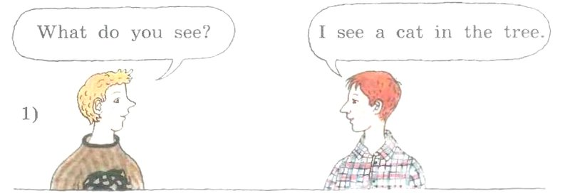
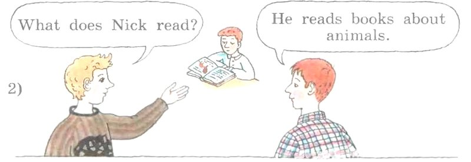
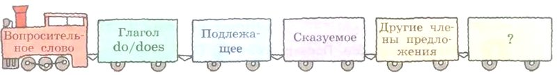
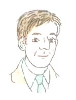
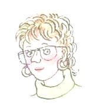

Unit 1 · Step 2
Вопросы с do и does
Арслан, этот урок — про то, как задавать вопросы по-английски.
Представь: ты хочешь узнать у друга, любит ли он футбол. По-русски ты говоришь почти те же слова, что в обычном предложении. Только голос в конце поднимаешь: «Ты любишь футбол?»
В английском так не получится. Там в начало вопроса ставят особое слово-флажок: do или does. Увидел флажок — значит, тебя о чём-то спрашивают.
- You like football.Ты любишь футбол. (Просто рассказ.)
- Do you like football?Ты любишь футбол? (Вопрос: впереди флажок Do.)
- Where do you play chess?Где ты играешь в шахматы? (Перед флажком встало слово «где».)
Что ты узнаешь в этом уроке:
- когда ставить do, а когда does и куда девается буква -s;
- как собрать вопрос со словами what, where, when, why, who — по схеме-паровозику из учебника;
- что рассказывают о своей семье папа и мама Джона Баркера.
Шаги короткие, листай кнопкой «Дальше». Синяя надпись вверху шага — это из учебника, золотая — задание учебника, оранжевая — сверх учебника: правила подробнее, словарик, игры.
Рядом с английскими словами есть кнопка-динамик: нажми, и телефон прочитает вслух. Строчки текстов тоже нажимаются — появится перевод. В конце игры и тест: за каждую игру загорается плитка мозаики.
На этом телефоне не нашёлся английский голос, поэтому кнопок-динамиков не будет. Всё остальное работает.
Подробнее, как в учебнике · с. 7
- Unit 1 называется «Meet John Barker and His Family» — «Познакомься с Джоном Баркером и его семьёй». Unit — это большой раздел учебника, а Step («шаг») — один урок.
- Step 2 начинается в середине с. 7, сразу после упражнения 8 из Step 1, и заканчивается на с. 11.
- DO IT TOGETHER — «делаем вместе», в классе: упражнения 1—7.
- DO IT ON YOUR OWN — «делай сам», дома: упражнение 8, задания 1—5 в рабочей тетради.
- Значок диска с числом рядом с заданием — номер аудиозаписи. В этом уроке записи 5, 6 и 7.
- Рамки с новыми словами и транскрипциями в Step 2 нет: новые слова встречаются прямо в упражнениях (husband, these, those, to ski, wife и другие). Они собраны в словарике.
Какой вопрос ты слышишь?
В классе учитель включит аудиозапись № 5 (дома её можно послушать из аудиоприложения к учебнику). Диктор читает по одному вопросу из каждой пары. Твоя задача — сказать, какой: a или b.
Хитрость: вопросы в паре почти одинаковые. Прочитай пару до записи, найди слово-отличие — и слушай только его. Здесь отличия выделены, а у a и b есть динамики. Но отвечать нужно по записи в классе.
- 1) Does he / she watch television in the evening?a b · he — он, she — она.
- 2) Do her daughters / Does her daughter like English songs?a b · дочерей несколько — Do, дочь одна — Does. Слушай начало!
- 3) Does Lucy have a cousin / husband?a b · cousin — двоюродный брат или сестра, husband — муж.
- 4) Are these / those films good for children?a b · these — эти, those — те.
- 5) When / Why are these trees green?a b · when — когда, why — почему.
- 6) Do young children like TV / to ski?a b · TV — телевизор, to ski — кататься на лыжах.
Новые слова
- husbandмуж
- theseэти (они рядом, их несколько)
- thoseте (они далеко, их несколько)
- to skiкататься на лыжах
А почему «эти» и «те»?
Держишь в руках книги и говоришь: these books — «эти книги». А про книги на дальней полке, куда нужно показать пальцем, скажешь: those books — «те книги».
Про одну вещь говорят this («этот») и that («тот»). these — это много this, those — много that.
Подробнее, как в учебнике · с. 7–8
- Задание 1: «Послушай аудиозапись (значок диска, запись 5) и скажи, какой из двух вариантов вопросов ты слышишь».
- 1) a) Does he watch television in the evening? b) Does she watch television in the evening?
- 2) a) Do her daughters like English songs? b) Does her daughter like English songs?
- 3) a) Does Lucy have a cousin? b) Does Lucy have a husband?
- 4) a) Are these films good for children? b) Are those films good for children?
- Пары 5 и 6 — уже на с. 8: 5) a) When are these trees green? b) Why are these trees green?
- 6) a) Do young children like TV? b) Do young children like to ski?
Do или does?
Представь, что do и does — два флажка. Оба значат «Внимание, вопрос!». А какой взять, зависит от того, о ком спрашиваешь.
| do | does |
|---|---|
| I, you, we, they | he, she, it |
| несколько: the boys, my friends, Tom and Ann | один: Tom, my sister, the dog |
Запомни: три слова — he, she, it (он, она, оно) — дружат с does. Все остальные — с do.
- Do you like ice cream?Ты любишь мороженое?
- Do the boys play chess?Мальчики играют в шахматы? (их несколько — they)
- Does your sister draw?Твоя сестра рисует? (сестра одна — she)
- Does your dog like milk?Твоя собака любит молоко? (собака — it)
- Does Grandpa live in Kaspiysk?Дедушка живёт в Каспийске? (дедушка — he)
Проверь себя: какой флажок?
Куда девается -s
Ты помнишь: когда рассказываем про одного (он, она), у глагола появляется -s: Kate sings — Кейт поёт.
Представь, что -s — это рюкзак. В рассказе его несёт глагол. А в вопросе рюкзак забирает does (в нём уже есть -s: do + es). И глагол идёт налегке.
- Kate sings. → Does Kate sing?Кейт поёт. → Кейт поёт?
- Tom runs in the park. → Does Tom run in the park?Том бегает в парке. → Том бегает в парке?
- The cat likes fish. → Does the cat like fish?Кошка любит рыбу. → Кошка любит рыбу?
- Mum watches TV. → Does Mum watch TV?Мама смотрит телевизор. → Мама смотрит телевизор? (-es тоже уходит)
В учебнике так и будет (шаг 8): He reads books about animals, а в вопросе — What does Nick read?
Проверь себя: без -s
Как ответить коротко
Друг спрашивает: «Ты любишь молоко?» Ты не пересказываешь всё заново, а говоришь просто «да» или «нет».
По-английски тоже коротко, только к Yes или No добавляют ещё кто и тот же флажок, с которого начался вопрос.
- Do you like milk? — Yes, I do. / No, I don't.Ты любишь молоко? — Да. / Нет.
- Does Kate sing? — Yes, she does. / No, she doesn't.Кейт поёт? — Да. / Нет.
- Do they play chess? — Yes, they do. / No, they don't.Они играют в шахматы? — Да. / Нет.
- Does your cat sleep a lot? — Yes, it does.Твоя кошка много спит? — Да.
Спросили с do — отвечай с do. Спросили с does — отвечай с does. В ответе вместо имени — he, she, it или they: Kate → she.
Проверь себя: короткий ответ
Вопросы о семье Баркеров
Учебник говорит: «Ты уже знаешь, как построить общие вопросы с do/does». Общий вопрос — это вопрос «да или нет» (шаг 3). Нужно составить несколько таких вопросов о семье Баркеров — the Barkers.
Вспомни, кто есть кто (это было в Step 1): John — мальчик, Sally — его сестра, Richard — папа, Margaret — мама. А the Barkers — вся семья Баркеров вместе.
| флажок | кто | что делает | остальное |
|---|---|---|---|
| Do Does | John | watch TV | in the evening? |
| Sally | go to school | English songs? | |
| Margaret | skate | in London? | |
| Richard | sing | in winter? | |
| the Barkers | play tennis | in summer? | |
| live | five days a week? |
Слова из таблицы: skate — кататься на коньках, sing — петь, live — жить, in winter — зимой, in summer — летом, five days a week — пять дней в неделю. Заголовки столбцов — наши, в учебнике их нет.
- Сначала выбери во втором столбике, о ком спрашиваешь.
- Это один человек или вся семья? Один — Does, вся семья (они) — Do. Правило — на шаге 3.
- Глагол из третьего столбика бери как есть, без -s (шаг 4).
- Добавь хвостик из четвёртого столбика и проверь смысл переводом. Получилось «Салли катается на коньках английские песни?» — значит, хвостик не тот.
Можно и ответить на свои вопросы — коротко: Yes, he does. / No, they don't. (шаг 5)
Подробнее, как в учебнике · с. 8
- Задание 2: «Ты уже знаешь, как построить общие вопросы с вспомогательными глаголами do/does. Составь несколько вопросов о семье Баркеров (the Barkers)».
- «Вспомогательный глагол» — так учебник называет do и does: они помогают построить вопрос, а сами на русский не переводятся.
- Таблица из четырёх столбцов, разделённых красными линиями. 1-й: Do, Does. 2-й: John, Sally, Margaret, Richard, the Barkers. 3-й: watch TV, go to school, skate, sing, play tennis, live. 4-й: in the evening?, English songs?, in London?, in winter?, in summer?, five days a week?
Мальчики спрашивают друг друга
Два мальчика разговаривают, учитель включит запись № 6. Учебник просит послушать и сказать, как они строят вопросы, которые начинаются с вопросительных слов: what, where, when, why.

Диалог 1
Нажми на строчку — появится перевод.
What do you see?
I see a cat in the tree.
What do you like?
I like sweets and cakes.
Where do you go in the morning?
I go to school in the morning.
When do you play football?
I play it in the afternoon.
Where do you play football?
I play it in the park.
Why do you speak English?
I like it.
Какое слово стоит в каждом вопросе первым? А какое вторым? И про кого все эти вопросы — про «я», «ты» или «он»?
Подробнее, как в учебнике · с. 8
- Задание 3 A: «Послушай, как эти мальчики разговаривают друг с другом (значок диска, запись 6), и скажи, как они строят вопросы, начинающиеся с вопросительных слов».
- Картинка 1): два мальчика — светловолосый в коричневом свитере и рыжий в клетчатой рубашке. В облачках: «What do you see?» — «I see a cat in the tree.»
- Под картинкой пять пар «вопрос — ответ»: What do you like? — I like sweets and cakes. Where do you go in the morning? — I go to school in the morning. When do you play football? — I play it in the afternoon. Where do you play football? — I play it in the park. Why do you speak English? — I like it.
А теперь про Ника
Во втором диалоге мальчики говорят о третьем — о Нике (Nick). Он сидит за столом и читает книгу.

Диалог 2
Нажми на строчку — появится перевод.
What does Nick read?
He reads books about animals.
What does he like?
He likes sport.
Where does Nick meet his friends?
He meets his friends in the park.
When does he watch TV?
He watches TV in the evening.
Why does he play tennis?
He likes it.
В первом спрашивали про you, во втором — про Nick и he. Какое слово поменялось на втором месте?
И посмотри на глагол: в вопросе read, а в ответе reads. Куда делась -s, ты уже знаешь (шаг 4). Ответив себе на это, ты почти ответишь учителю. А схема из учебника на следующем шаге всё соберёт.
Подробнее, как в учебнике · с. 9
- Картинка 2): те же мальчики. Светловолосый показывает рукой на Ника, который сидит за столом и читает книгу. В облачках: «What does Nick read?» — «He reads books about animals.»
- Под картинкой четыре пары: What does he like? — He likes sport. Where does Nick meet his friends? — He meets his friends in the park. When does he watch TV? — He watches TV in the evening. Why does he play tennis? — He likes it.
- Это вторая часть того же задания 3 A (запись 6).
Схема-паровозик
Учебник рисует вопрос как поезд. Впереди паровоз — вопросительное слово. За ним вагоны, и у каждого своё место. Переставлять вагоны нельзя!

Вот этот поезд на вопросе из диалога. Цвета наши, чтобы было видно вагоны:
- Вопросительное слово — паровоз: what, where, when, why, who. Оно говорит, что мы хотим узнать.
- Глагол do/does — флажок вопроса. Выбираем, как в шаге 3.
- Подлежащее — кто? (Nick, you, he).
- Сказуемое — что делает? (read, like, play). После does — без -s.
- Другие члены предложения — всё остальное: где, когда, что (in the park, TV). Бывает, этого вагона нет.
- ? — последний вагон, знак вопроса.
Подробнее, как в учебнике · с. 9
- Задание 3 B: «Посмотри на схему и составь в соответствии с ней пять вопросов».
- Схема нарисована поездом: паровоз «Вопросительное слово», за ним вагоны «Глагол do/does», «Подлежащее», «Сказуемое», «Другие члены предложения» и последний вагон «?». В книге каждый вагон своего цвета.
- Под схемой — карточки со словами и сноска про who. Они на шаге 12, вместе с самим заданием.
Вопрос с вопросительным словом
Общий вопрос — это поезд без паровоза. Прицепи впереди паровоз — вопросительное слово, — и получится специальный вопрос. Остальные вагоны стоят на своих местах!
Ты читаешь книги? — Yes, I do.
Когда ты читаешь книги? — I read books in the evening.
Слова-паровозы
- whatчто
- whereгде, куда
- whenкогда
- whyпочему
- whoкто; а в вопросах с do/does — кого (сноска учебника на с. 9)
Подробнее про эти слова — в следующем уроке, Step 3.
Проверь себя: какой паровоз?
Собираем вопросы-паровозы
Посмотри, как паровоз, флажок и вагоны работают в разных вопросах. Нажми на динамик — и послушай.
- What does Kate draw?Что рисует Кейт?
- Where do your grandparents live?Где живут твои бабушка и дедушка?
- Why do you like Kaspiysk?Почему тебе нравится Каспийск?
- What do the girls sing?Что поют девочки?
- Who do you know in this town?Кого ты знаешь в этом городе?
В первом забыли флажок, во втором перепутали вагоны: сначала кто, потом что делает.
Проверь себя: собери вопрос
Нажимай на слова по порядку. Если ошибся, нажми на слово в строчке — оно вернётся вниз.
Пять вопросов из карточек
Под схемой-паровозиком в учебнике 30 карточек со словами. Из них нужно собрать пять вопросов по схеме. Вот карточки, как в книге:
- Сколько вопросов, столько и паровозов. Сначала найди все вопросительные слова: они написаны с большой буквы.
- К каждому паровозу подбери флажок. Does идёт только с he или she (шаг 3), остальные — с do.
- Карточка to do — не флажок! Это «делать» в сочетании like to do — «любить делать». Её место ближе к хвосту поезда.
- Проверь каждый вопрос переводом на русский: смысл должен получиться.
У карточки Who стоит звёздочка. Внизу страницы объяснение: в подобных вопросах слово who означает не «кто», а «кого».
Who do you love? — Кого ты любишь?
Подробнее, как в учебнике · с. 9
- Задание 3 B: «Посмотри на схему и составь в соответствии с ней пять вопросов».
- Карточки, 5 рядов по 6, как в книге: What, like, do, to do, you, ? / do, TV, ?, When, watch, they / we, do, Where, ?, in summer, swim / drive, Why, does, he, a car, ? / does, ?, meet, at school, Who*, she.
- Сноска внизу страницы: «* Обрати внимание, что в подобных вопросах слово who означает кого».
Вопросы из рассыпанных слов
Работа в парах. В каждом вопросе слова рассыпаны и стоят через чёрточку /. Нужно собрать их по паровозику, задать вопрос соседу по парте, а он ответит. Потом наоборот.
Часть A — вопросы о самом партнёре (you). Часть B — о его друге или подруге (he или she).
Образцы из учебника
A: like/do/in the evening/what/you/to do?
B: does/he or she/where/live?
- Найди вопросительное слово — это паровоз, он первый.
- За ним do или does — флажок уже есть среди слов.
- Потом кто: you или he/she. Потом что делает. Потом остальное и «?».
- Если в вопросе два «кого-то» (например, you и your friend), подлежащее — тот, кто делает. Похожий пример: when/your sister/call/do/you? → When do you call your sister? — Когда ты звонишь сестре? Звонишь ты, значит, you стоит сразу после do.
Полным предложением: сначала кто, потом что делает. На вопрос When do you draw? ответ — I draw in the evening. Про друга — с -s: He draws in the evening.
Подробнее, как в учебнике · с. 10
- Задание 4: «Поработайте в парах. Составьте специальные вопросы и ответьте на них».
- A. Вопросы о твоём партнёре. Образец: like/do/in the evening/what/you/to do? — What do you like to do in the evening?
- 1) you/go/where/do/in the morning? 2) sport/like/you/what/do? 3) do/watch/on TV/you/what? 4) when/your friend/meet/do/you? 5) like/why/do/you/your friend?
- B. Вопросы о друге или подруге твоего партнёра. Образец: does/he or she/where/live? — Where does he/she live?
- 1) he or she/what/like/does/to eat? 2) what/to do/like/does/he or she/in the evening? 3) go to school/does/he or she/when? 4) does/where/skate/he or she? 5) he or she/why/watch/does/TV?
Заверши диалоги
В трёх диалогах пропущены вопросы (там, где «…?») и короткие ответы («… .»). Их нужно придумать. Потом проверь себя по записи № 7.
- Ответ «Yes, I do» или «No, I don't» — значит, вопрос был общий, с Do.
- В ответе место (in the park, in London) — вопрос с Where.
- В ответе время (in the morning, in winter) — вопрос с When.
- «… or …?» — вопрос с выбором «то или это». Например: Do you like tea or milk? — I like milk.
- «… .» перед рассказом — это короткий ответ «да» или «нет» (шаг 5).
Диалоги из учебника
Нажми на строчку — появится перевод.
1) Kate: …, Jill?
Jill: I live in a small English town.
Kate: …?
Jill: Yes, I do. I'm a pupil.
2) John: Do you like to swim, Mark?
Mark: … . I swim a lot.
John: …?
Mark: I swim in summer.
John: …?
Mark: I swim in the lake near my house.
3) Rob: Do you like to watch television?
Andrew: … . I watch TV a lot.
Rob: … or …?
Andrew: I like new films.
Rob: …?
Andrew: I watch television in the evening.
Подробнее, как в учебнике · с. 10
- Задание 5: «Заверши диалоги. Проверь себя (значок диска, запись 7)».
- 1) Kate: …, Jill? Jill: I live in a small English town. Kate …? Jill: Yes, I do. I'm a pupil.
- 2) John: Do you like to swim, Mark? Mark: … . I swim a lot. John: …? Mark: I swim in summer. John …? Mark: I swim in the lake near my house.
- 3) Rob: Do you like to watch television? Andrew: … . I watch TV a lot. Rob … or …? Andrew: I like new films. Rob: …? Andrew: I watch television in the evening.
- В книге в трёх местах после имени нет двоеточия (Kate …?, John …?, Rob … or …?) — это просто опечатка, смысл тот же.
Our Family: рассказывает Ричард
Это текст упражнения 6 — «Наша семья». Первым о семье рассказывает Ричард Баркер, папа Джона и Салли.
Учебник спрашивает: о чём забыла упомянуть Маргарет Баркер? Чтобы ответить, прочитай оба рассказа — этот и следующий.

Our Family
Нажми на строчку — появится перевод.
We live in London.
We are not a very big family.
I have a wife and two children — my son John and my daughter Sally.
We have two pets.
They are Chase, a big collie dog, and Smokey, a little grey cat.
Where do they live? In our house.
Where do they play? In the park with my children.
John and Sally love their pets and feed them in the morning and in the evening.
Новые слова: wife — жена, collie — колли (порода собак), grey — серый, feed — кормить.
Ричард сам задаёт вопросы и сам на них отвечает: Where do they live? Where do they play? Это специальные вопросы с do — they здесь питомцы, их двое.
Подробнее, как в учебнике · с. 11
- Задание 6: «Прочитай, что рассказывают о своей семье Ричард Баркер и Маргарет Баркер. О чём забыла упомянуть Маргарет Баркер?»
- Заголовок текста: «Our Family».
- Слева от первой части — портрет Ричарда Баркера (мужчина в пиджаке и галстуке). Подписи под портретом нет.
- Рассказ Ричарда: We live in London. We are not a very big family. I have a wife and two children — my son John and my daughter Sally. We have two pets. They are Chase, a big collie dog, and Smokey, a little grey cat. Where do they live? In our house. Where do they play? In the park with my children. John and Sally love their pets and feed them in the morning and in the evening.
Our Family: рассказывает Маргарет
Вторая часть текста — рассказ Маргарет Баркер, мамы Джона и Салли.

Our Family
Нажми на строчку — появится перевод.
My name is Margaret Barker.
My family is not big.
I have a husband, a son and a daughter.
We all live in England in London.
My son John goes to school.
My daughter Sally goes to school too.
The school is near our house.
In the evening we are all in our house.
We like to watch television and read books.
I love my family.
- Вспомни (или выпиши), о ком и о чём рассказывает Ричард. Вернуться к нему: шаг 15.
- Отметь то же у Маргарет.
- Что есть у Ричарда, но нет у Маргарет, — о том она и забыла.
Подробнее, как в учебнике · с. 11
- Рассказ Маргарет: My name is Margaret Barker. My family is not big. I have a husband, a son and a daughter. We all live in England in London. My son John goes to school. My daughter Sally goes to school too. The school is near our house. In the evening we are all in our house. We like to watch television and read books. I love my family.
- Справа от рассказа — портрет Маргарет Баркер (женщина в очках, в зелёном свитере). Подписи под портретом нет.
- Вопрос к тексту — в самом задании 6: «О чём забыла упомянуть Маргарет Баркер?»
Вставь do или does
Восемь вопросов, в каждом пропуск. Нужно вставить do или does, чтобы получились вопросы.
- 1) Where … Alec swim in summer?
- 2) When … the girls play tennis?
- 3) Why … dogs hate cats?
- 4) What … your pet eat?
- 5) Who … you see in this photo?
- 6) Why … Ann speak English well?
- 7) Why … we go to school?
- 8) What … your friend like to watch on TV?
- Найди, кто делает, — это слово стоит сразу после пропуска.
- Попробуй заменить его на he, she или it. Получилось — ставь does.
- Заменяется на I, you, we или they — ставь do.
| Кто делает | Можно заменить на | Флажок |
|---|---|---|
| одно имя: Tom, Kate | he / she | does |
| my, your + один: my brother, your cat | he / she / it | does |
| несколько: the boys, cats, Tom and Kate | they | do |
| I, you, we, they | — | do |
Осторожно с вопросом 5: who здесь значит «кого» (сноска на с. 9). Ищи того, кто видит, — он стоит после пропуска. Слово hate — «ненавидеть, терпеть не мочь». Потренироваться можно в игре «Do или does?» на шаге 20: там другие предложения.
Подробнее, как в учебнике · с. 11
- Задание 7: «Вставь слова do или does, чтобы получились вопросы».
- 1) Where … Alec swim in summer? 2) When … the girls play tennis? 3) Why … dogs hate cats? 4) What … your pet eat?
- 5) Who … you see in this photo? 6) Why … Ann speak English well? 7) Why … we go to school? 8) What … your friend like to watch on TV?
Словарик: новые слова
ИграНажми на карточку — она перевернётся, а телефон прочитает слово. Словарик из двух частей, открой все карточки.
Словарик: слова-вопросы
ИграВторая часть: паровозы и флажки вопросов.
Do или does?
ИграВыбери флажок для каждого вопроса. Сначала найди, кто делает.
Собери поезд
ИграСобери английский вопрос по паровозику: нажимай на слова по порядку. Когда соберёшь, вагоны раскрасятся, как на схеме.
Послушай и выбери
ИграКак в упражнении 1: телефон скажет вопрос, а ты выбери, какой. Фразы отличаются одним словом. Можно слушать сколько угодно раз и медленно.
Проверь себя
Задания из учебника
Это все упражнения урока с теми же номерами, что в твоём учебнике. Рядом — где на этой странице про них рассказано и подсказка. Готовых ответов здесь нет: их найдёшь ты сам.
DO IT TOGETHER — делаем вместе
Послушай аудиозапись (5) и скажи, какой из двух вариантов вопросов ты слышишь. (с. 7–8)
Подсказка: заранее найди в каждой паре слово-отличие и слушай только его.
Шаг 2 · Какой вопрос ты слышишь?Составь несколько общих вопросов о семье Баркеров по таблице. (с. 8)
Подсказка: один человек — Does, вся семья — Do; глагол без -s; проверь смысл переводом.
Шаг 6 · Вопросы о семье Баркеров Шаг 3 · Do или does?Послушай (6), как мальчики разговаривают, и скажи, как они строят вопросы с вопросительными словами. (с. 8–9)
Подсказка: что стоит первым, что вторым? Что меняется, когда спрашивают не про you, а про Nick?
Шаг 7 · Диалог 1 Шаг 8 · Диалог 2Посмотри на схему и составь по ней пять вопросов из карточек. (с. 9)
Подсказка: сначала найди пять паровозов — слова с большой буквы. who здесь значит «кого».
Шаг 9 · Схема-паровозик Шаг 12 · КарточкиВ парах: составьте специальные вопросы из рассыпанных слов и ответьте на них. A — о партнёре, B — о его друге или подруге. (с. 10)
Подсказка: паровоз, флажок, кто, что делает, остальное. Подлежащее — тот, кто делает.
Шаг 13 · Рассыпанные слова Шаг 10 · ПравилоЗаверши диалоги и проверь себя по записи (7). (с. 10)
Подсказка: смотри на ответ — место подскажет Where, время — When, «Yes, I do» — общий вопрос.
Шаг 14 · Заверши диалоги Шаг 5 · Короткие ответыПрочитай «Our Family». О чём забыла упомянуть Маргарет Баркер? (с. 11)
Подсказка: сравни два рассказа — что есть у Ричарда и нет у Маргарет?
Шаг 15 · Ричард Шаг 16 · МаргаретВставь do или does, чтобы получились вопросы. (с. 11)
Подсказка: найди, кто делает, и замени его на he/she/it или на I/you/we/they.
Шаг 17 · Вставь do или does Шаг 20 · ИграDO IT ON YOUR OWN — делай сам
Выполни задания 1—5 в рабочей тетради.
Подсказка: в тетради те же правила, что в этом уроке. Застрял — открой шаги с правилами.
Шаг 3 · Do или does? Шаг 4 · Без -s Шаг 5 · Короткие ответы Шаг 10 · ПаровозПодробнее, как в учебнике · с. 7–11
- Step 2 состоит из двух частей: DO IT TOGETHER (упражнения 1—7, с. 7—11) и DO IT ON YOUR OWN (упражнение 8, с. 11).
- Упражнение 8 в учебнике: «Выполни задания 1—5 в рабочей тетради». Самих заданий тетради в учебнике нет.
- Упражнения 1, 3 A и 5 — с аудиозаписями 5, 6 и 7. Упражнение 4 — работа в парах.
Главное в уроке
Вот четыре «кирпичика» урока. Открой их и проверь, помнишь ли ты каждый.
В английском вопросе впереди стоит флажок do или does (does — для he, she, it, и тогда глагол теряет -s), а чтобы спросить что, где, когда или почему, перед флажком ставят вопросительное слово: What does Nick read?